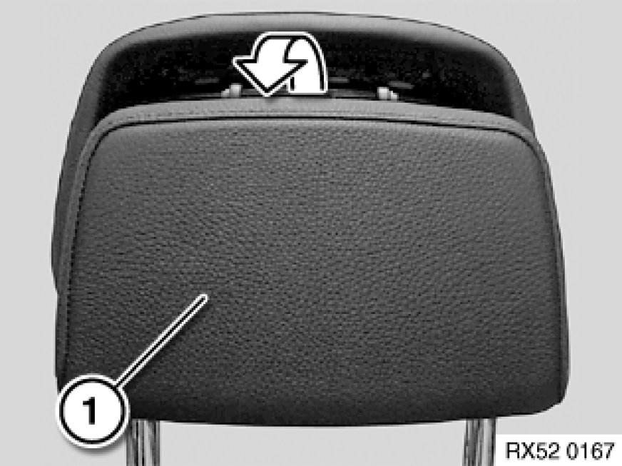

Replacing Gas Cartridge (Pyroactivator) for Crash-Active Head Restraint on Front Seat
52 14 385 - Replacing gas cartridge (pyroactivator) for crash-active head restraint on front seat

Warning!
Read and comply with safety regulations [1][2]Safety Regulations for Handling Components with Gas Generators for handling airbag modules and pyrotechnical belt pretensioners.
Incorrect handling may result in triggering of the crash-active head restraint and thereby cause injury.
Switch off ignition!

Necessary preliminary tasks:
- Disconnect battery negative lead Disconnecting and Connecting Battery Negative Lead
- Remove crash-active head restraint Removing and Installing/Replacing Front Left or Right Crash-Active Head Restraint

Important!
The pyrotechnical device may be replaced up to 5 times.
Triggering frequency is denoted on the sticker on the head restraint carrier.
Stickers are available as spare parts.
Starting situation:
Head restraint is in the crash position after being triggered.
Note:
Pyroactivator can only be removed in the triggered state.
The complete crash-active head restraint must be replaced if the event of a head restraint fault signal and an untriggered pyroactivator.

Removing cover:
Raise cover (1) and pull towards rear.
Removing pyrotechnical device:
Press together retainer (1) for pyrotechnical device at lugs.
Feed out pyrotechnical device.
Removing pyroactivator:
Pull pyroactivator (2) out of mounting (1) for pyrotechnical device.
Unlock plug connection Unlocking/Locking Airbag Plug Connections(3) and disconnect.
Important!
Dispose of plastic element and pyroactivator.

Procedure for installing pyrotechnical device:
Bringing head restraint together - version without button (MFS):
Pull spring catches apart and push head restraint together.
Maintain position.
Bringing head restraint together - version with button (Basic):
Press button (1) and push head restraint together.
Maintain position.
Locking release plate:
Hold pushed-together head restraint in position and push release plate (1) upwards up to stop.
Release plate (1) must audibly snap into place.
Checking head restraint lock:
Check end position of release plate (1).
All four springs must be engaged (snapped into place).
Replacing pyrotechnical device:
Connect plug (1) to new pyroactivator (2) and lock Unlocking/Locking Airbag Plug Connections.
Clip pyroactivator (2) into new mounting (3).
Installing pyrotechnical device:
Press together retainer for pyrotechnical device at lugs.
Insert retainer for pyrotechnical device into release plate and tilt in in upward direction.
Retainer for pyrotechnical device must audibly snap into place.
Note:
Check seating of retaining lugs in retainer.
Laying wiring harness:
Secure wiring harness in carrier section with strain relief.
Mounting cover:
Clip cover onto carrier section.
Cover must audibly snap into place.